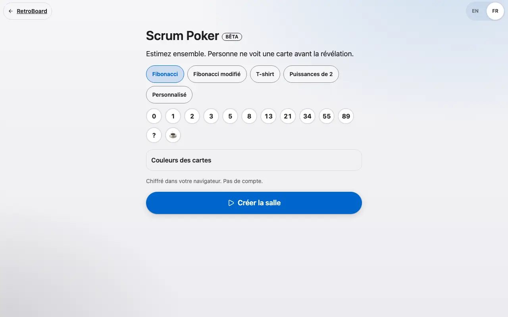
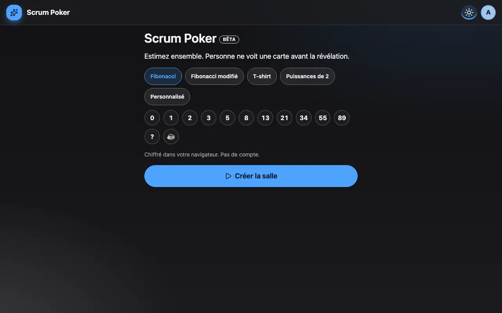
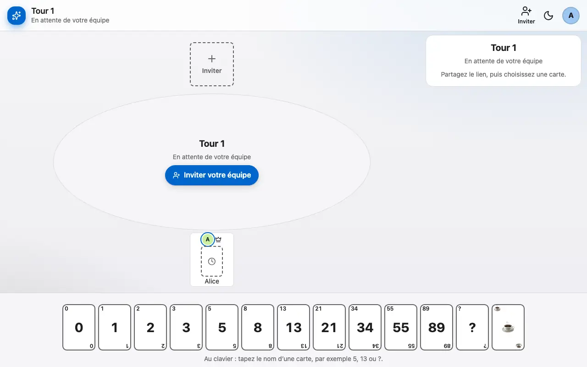
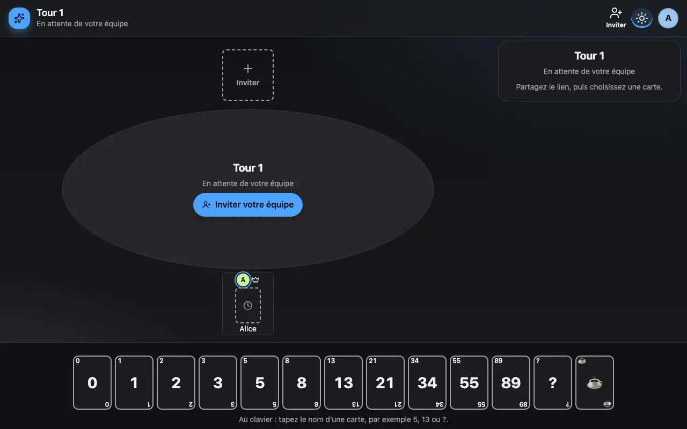

Estimer avec le Scrum Poker (bêta)
Une salle de poker pour estimer en équipe: chacun choisit une carte, personne ne voit les autres avant la révélation. Sans compte, chiffré comme un board.
Le Scrum Poker est une salle pour estimer ensemble: chacun choisit une carte, personne ne voit celles des autres, et les cartes se retournent d'un coup quand l'animateur les révèle. C'est une bêta: les histoires, le minuteur et les exports ne sont pas encore là. Il n'y a pas de compte, et la salle est chiffrée comme un board: le lien porte la clé après le #, donc le serveur ne voit que du chiffré et ne garde rien.
1 Choisis un jeu de cartes (Fibonacci, T-shirt, puissances de 2, ou ta propre liste), puis crée la salle en un clic.
Trouve Scrum Poker sur la page d'accueil, dans le menu des boards ou sur la page de la bibliothèque. Choisis un jeu de cartes (Fibonacci, Fibonacci modifié, T-shirt, puissances de 2) ou tape les tiennes séparées par des virgules, par exemple 1, 2, 4, 8, ?: elles s'affichent en pastilles rondes. Puis appuie sur Créer la salle.


2 La salle tient en un écran: la barre (Inviter ouvre le lien et son QR code), la table et ta main de cartes en bas: les cartes restent cachées jusqu’à la révélation.
Tape un nom et rejoins la salle: c'est tout ce qu'on te demande. Tu es l'animateur. La salle tient en un écran: une barre en haut (retour, le tour avec une ligne d'état comme « 3 sur 6 ont voté », Inviter et un menu), la table au milieu et, en bas, ta main. Appuie sur Inviter (ou sur le siège en pointillés tant que tu es seul): une feuille montre un QR code et un bouton Copier le lien, et Partager sur un téléphone. Envoie le lien à l'équipe: la personne qui l'ouvre tape un nom et s'assoit à la table. Le lien n'est jamais écrit sur la page, donc un écran partagé ne le révèle pas. Le menu contient la langue, clair ou sombre, et le retour à RetroBoard.
Ta main est une rangée de vraies cartes au bas de l'écran, sur deux rangées sur un téléphone (un long jeu personnalisé tient sur une seule rangée qu'on fait glisser). Choisis une carte en la touchant ou en tapant son nom au clavier (5, 1 puis 3 pour 13, ?): la carte choisie est soulevée, cerclée et cochée, et tu peux en changer jusqu'à la révélation. Chaque siège de la table montre une personne, un dos de carte avec une coche quand elle a voté, un emplacement vide avec une horloge tant qu'elle n'a pas voté, jamais la carte elle-même; une ligne sous la table dit qui la salle attend. L'animateur appuie sur Révéler (le bouton apparaît avec le premier vote): ta main cède la place aux résultats et chaque carte se retourne en une fraction de seconde (pas du tout si tu as demandé moins d'animations), en montrant sa valeur une seule fois sur son siège. Les résultats commencent par deux grands nombres, la moyenne et la médiane, puis un indicateur qui dit en mots à quel point la salle est d'accord (Tout le monde est d'accord, Accord fort, Accord partiel, Pas encore d'accord) et une colonne par carte jouée avec son nombre. Quand la carte la plus haute ou la plus basse s'écarte des autres, une ligne la nomme avec les personnes qui l'ont jouée, et la même icône se trouve sur leurs sièges. L'animateur peut appuyer sur Utiliser 5 pour garder la carte suggérée comme estimation du tour: tout le monde lit alors « Estimation 5 », et une personne qui n'est pas l'animateur voit la suggestion comme un simple texte. Deux boutons en bas appartiennent à l'animateur: Revoter (un nouveau tour sur le même sujet) et Tour suivant; le bouton plein est la suite probable, Tour suivant quand la salle est d'accord et Revoter quand elle ne l'est pas. Un lecteur d'écran entend le nombre de votes, la révélation avec ses chiffres et le nouveau tour, une fois chacun. Recharger la page garde ta place et ta carte. Une salle compte 20 votants; les suivants observent.

